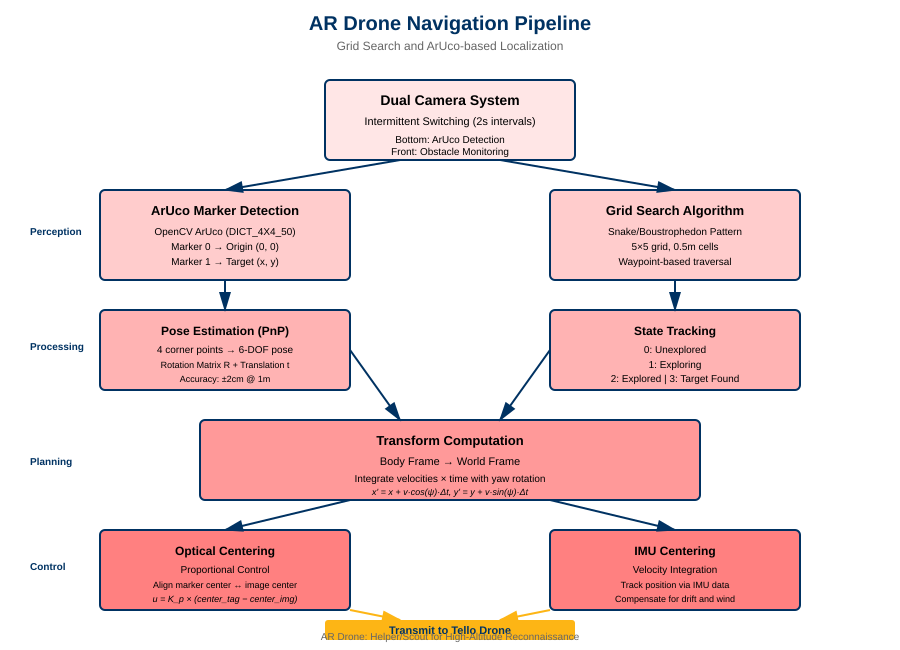
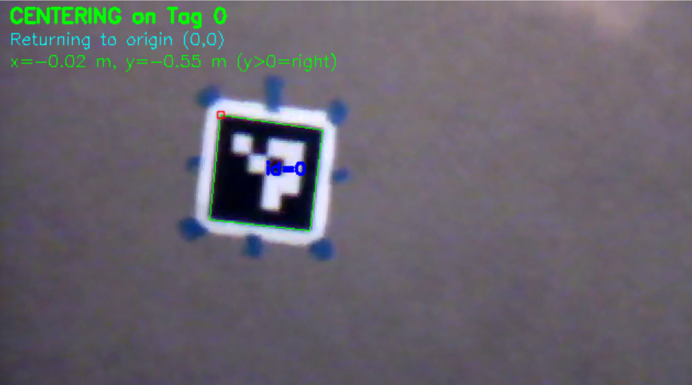
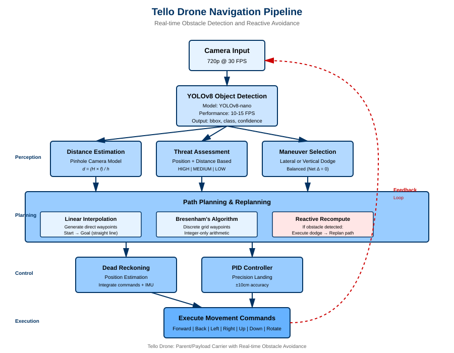

Technical Details
This page provides comprehensive technical documentation of all algorithms, mathematical formulations, and implementation details for the drone cooperative system. Each section includes equations, pseudocode, performance metrics, and design rationale.

1. AR Drone (Helper/Scout) System
The AR Drone serves as a high-altitude scout, performing grid-based search patterns to locate ArUco markers and computing world-frame transforms for target localization.

1.1 ArUco Marker Detection
Overview
ArUco markers are fiducial markers used for precise pose estimation and localization. The system detects markers in video frames using OpenCV and estimates the drone's position relative to them with ±2cm accuracy at 1m distance.
Detection Algorithm
Dictionary: DICT_4X4_50 (50 unique 4×4 markers)
Process:
- Convert frame to grayscale: $I_{gray} = \text{RGB2Gray}(I)$
- Adaptive thresholding with block size 11
- Contour detection and square filtering
- Perspective transform to canonical view
- Binary pattern decoding and validation
Pose Estimation (PnP)
Given 4 corner points in image space and known marker size $L$ (15cm), solve the Perspective-n-Point problem:
Where:
- $R \in SO(3)$ is the 3×3 rotation matrix
- $t \in \mathbb{R}^3$ is the translation vector
- $M$ = 3D marker corners in marker frame
- $P$ = 2D corner points in image (pixels)
- $K$ = camera intrinsic matrix
- $D$ = distortion coefficients
Camera Intrinsic Matrix
For AR Drone camera (640×480):
Distance to Marker
Performance
| Distance | Position Error | Angle Error | Detection Rate |
|---|---|---|---|
| 0.5m | ±1cm | ±1° | 30 FPS |
| 1.0m | ±2cm | ±2° | 30 FPS |
| 2.0m | ±5cm | ±3° | 28 FPS |
| 3.0m | ±10cm | ±5° | 25 FPS |
Implementation: See AR Drone/aruco_detection/detector.py
1.2 Grid Search Algorithm
Overview
Systematic grid-based search pattern for finding ArUco markers. Uses a snake/boustrophedon traversal pattern to efficiently cover a 5×5 grid with 0.5m cell size.
Snake Pattern Traversal
The algorithm moves left-to-right on even rows, right-to-left on odd rows:
Row 0: → → → → →
Row 1: ← ← ← ← ←
Row 2: → → → → →
Row 3: ← ← ← ← ←
Row 4: → → → → →State Tracking
Each cell has one of four states:
- 0 - Unexplored: Cell not yet visited
- 1 - Exploring: Currently searching this cell
- 2 - Explored: Search complete, no target found
- 3 - Target Found: ArUco marker detected in this cell
Pseudocode
def snake_pattern(grid_size):
waypoints = []
for row in range(grid_size):
if row % 2 == 0:
# Left to right
for col in range(grid_size):
waypoints.append((row, col))
else:
# Right to left
for col in range(grid_size - 1, -1, -1):
waypoints.append((row, col))
return waypointsCell-to-World Coordinate Conversion
Convert grid cell $(r, c)$ to world coordinates:
Where $(r_{start}, c_{start})$ is the starting cell (typically grid center).

Implementation: See AR Drone/path_planning/grid_search.py
1.3 Transform Computation (Body Frame → World Frame)
Overview
Computes world-frame position by integrating body-frame velocities over time, using IMU yaw data to rotate velocities into the world frame.
Coordinate Frames
- Body Frame: Forward (+x), Right (+y), Down (+z) relative to drone
- World Frame: North (+x), East (+y), Down (+z) relative to origin
Transform Equations
For each time step $\Delta t$ with velocity command $(v_x, v_y)$ and yaw $\psi$:
Example Transform Calculation
Measured data from actual flight:
- $\Delta x = 1.251$ m (right +, left −)
- $\Delta y = 4.018$ m (forward +, back −)
- $\Delta\psi = -0.08°$ (yaw drift)

Error Analysis
Position error accumulates as:
Where $n$ is number of movements, $D$ is total distance, and $\sigma$ terms are individual errors.
Typical Accuracy: ±10cm after 3m flight with 6 movements
1.4 Optical Centering (Proportional Control)
Overview
Pixel-based proportional control system that centers the drone above an ArUco marker by aligning the marker's center with the image center.
Control Algorithm
- Detect ArUco marker in frame
- Calculate marker center: $c_{tag} = (x_{tag}, y_{tag})$
- Calculate image center: $c_{img} = (w/2, h/2)$
- Compute error: $e = c_{tag} - c_{img}$
- Apply proportional control: $u = K_p \cdot e$
Control Law
Where $K_p = 0.3$ (tuned proportional gain).
Demonstration Video

1.5 IMU Positional Centering
Overview
Uses instantaneous velocity measurements and IMU integration to maintain centered position above marker, compensating for wind and drift.
Velocity Integration
Proportional Correction
After disturbances (wind, takeoff drift), apply correction:
Performance: ±5cm accuracy with disturbance rejection
2. Tello Drone (Parent/Payload) System
The Tello Drone executes low-altitude navigation with real-time obstacle detection, distance estimation, reactive avoidance, and precision landing control.

2.1 YOLOv8 Object Detection Pipeline
Overview
YOLOv8 (You Only Look Once v8) performs real-time object detection, identifying and localizing 80+ object classes in a single forward pass through a convolutional neural network.
Model Specifications
- Variant: YOLOv8-nano
- Parameters: 3.2 million (6MB file size)
- Performance: 10-15 FPS on Tello
- Accuracy: 89.7% mAP on COCO dataset
- Classes: 80 object categories (person, chair, bottle, etc.)
Network Architecture
Input (320×240) → Backbone (CSPDarknet) → Neck (PANet) → Head → DetectionsDetection Output
Each detection $d_i$ contains:
Where:
- $\text{bbox} = (x_1, y_1, x_2, y_2)$ are bounding box coordinates
- $\text{class} \in \{\text{person}, \text{chair}, \text{bottle}, \ldots\}$
- $\text{confidence} \in [0, 1]$ is detection confidence
Detection Filtering
Filter detections by confidence threshold $\theta = 0.5$:
Implementation
# YOLOv8 Detection
results = model(frame, conf=0.5, verbose=False)
for box in results[0].boxes:
x1, y1, x2, y2 = box.xyxy[0].cpu().numpy()
confidence = float(box.conf[0])
class_id = int(box.cls[0])
class_name = model.names[class_id]Code: See Tello/obstacle_avoidance/obstacle_detector.py
2.2 Pinhole Camera Distance Estimation
Overview
Estimates distance to detected objects using the pinhole camera model and known object dimensions, providing monocular depth estimation without requiring a depth sensor.
Pinhole Camera Equation
Where:
- $d$ = distance to object (meters)
- $H$ = known real-world height of object (meters)
- $f$ = focal length of camera (700 pixels, calibrated)
- $h$ = pixel height of object in image
Derivation (Similar Triangles)
Real World Image Plane
↓ ↓
|----H----| |--h--|
| | | |
| Object | → Camera
| | | |
|---------| |-----|
↑ ↑
Distance d Focal length f
Similar triangles: H/d = h/f
Solving for d: d = (H × f) / hObject Height Database
| Object Class | Height (m) |
|---|---|
| person | 1.7 |
| chair | 0.9 |
| bottle | 0.25 |
| cup | 0.12 |
| laptop | 0.02 |
| tv | 0.6 |
Focal Length Calibration
Empirical calibration process:
Example: Place person (H = 1.7m) at d = 2.0m, measure h = 150 pixels:
Configured value: f = 700 pixels (empirically tuned for Tello camera)
Error Analysis
Relative error scales with pixel measurement error:
| Distance | Pixel Height | Error (±2px) |
|---|---|---|
| 0.5m | 600px | 0.7% |
| 1.0m | 300px | 1.3% |
| 2.0m | 150px | 2.7% |
| 5.0m | 60px | 6.7% |
| 10.0m | 30px | 13.3% |
Typical Accuracy: ±20% at 5m distance
2.3 Threat Assessment Algorithm
Overview
Classifies detected obstacles into threat levels (HIGH, MEDIUM, LOW) based on distance and position relative to the drone's flight path.
Position Classification
Bounding box center $x_c = (x_1 + x_2) / 2$ determines position:
Where $W = 320$ pixels (image width).
Threat Level Determination
For CENTER obstacles (direct collision path):
For LEFT/RIGHT obstacles:
Note: Side threshold is 70% of center HIGH threshold (1.05m = 0.7 × 1.5m)
Threat Decision Matrix
| Position | < 1.05m | 1.05-1.5m | 1.5-2.5m | > 2.5m |
|---|---|---|---|---|
| CENTER | HIGH | HIGH | MEDIUM | LOW |
| LEFT | MEDIUM | LOW | LOW | LOW |
| RIGHT | MEDIUM | LOW | LOW | LOW |
Response Actions
- HIGH threat: Emergency stop + vertical/lateral dodge
- MEDIUM threat: Slow approach + prepare avoidance
- LOW threat: Continue with monitoring
2.4 Obstacle Avoidance Maneuvers
Overview
Reactive obstacle avoidance using pre-planned dodge maneuvers that ensure the drone returns to its original path after avoiding an obstacle. Key property: Net displacement = 0 (path preservation).
Lateral Dodge Maneuver
Three-step balanced maneuver:
- Move sideways: $y_1 = y_0 + D_{lateral}$ (80cm)
- Move forward: $x_2 = x_0 + d + w/2 + m$ (pass obstacle)
- Move back sideways: $y_3 = y_0$ (return to path)
Net displacement: $\Delta y = y_3 - y_0 = 0$ ✓
Vertical Dodge Maneuver
For wide obstacles (w > threshold):
- Move up: $z_1 = z_0 + D_{vertical}$ (60cm)
- Move forward: $x_2 = x_0 + d + w/2 + m$
- Move down: $z_3 = z_0$ (return to altitude)
Net displacement: $\Delta z = z_3 - z_0 = 0$ ✓
Maneuver Diagram
Obstacle
🚧
│
START ────────┐ │ ┌─────────> GOAL
(x₀,y₀) │ │ │
│ │ │
1. ↓ │ ↑ 3.
(lateral) │ (lateral)
│
────→│────→
2. forward
(pass)Benefits
- ✓ Mathematically balanced: Returns to exact original path
- ✓ Endpoint preservation: Final position unaffected by detours
- ✓ Predictable: Deterministic maneuver sequence
- ✓ Safe: 50cm clearance margin
Trade-offs
- ⚠️ Increases flight time by 10-20%
- ⚠️ Battery cost ~5-10% per maneuver
- ✓ Guarantees target accuracy (critical for landing)
Code: See Tello/obstacle_avoidance/circumvent.py
2.5 PID Controller (Position Control)
Overview
PID (Proportional-Integral-Derivative) controller for precise position control and landing, using feedback from position estimation to minimize error and achieve ±10cm accuracy.
PID Control Law
Where:
- $e(t) = \text{target} - \text{current}$ is the error
- $K_p$ = proportional gain (immediate response)
- $K_i$ = integral gain (eliminates steady-state error)
- $K_d$ = derivative gain (dampens oscillations)
Discrete-Time Implementation
At time step $k$ with sampling period $\Delta t$:
Anti-Windup (Integral Clamping)
Prevent integral term from growing unbounded:
Where $I_{max} = 50$cm.
Deadband
Prevent oscillation near target:
Where $\epsilon_{deadband} = 10$cm for position, 5° for yaw.
Tuned PID Gains
| Axis | Kp | Ki | Kd | Performance |
|---|---|---|---|---|
| X, Y, Z | 1.0 | 0.1 | 0.3 | ±10cm, 2-3 iterations |
| Yaw | 0.5 | 0.05 | 0.1 | ±5°, 1-2 iterations |
Example Correction Sequence
Target: (200cm, 100cm, 120cm, 45°)
Iteration 1: Position (185, 95, 115, 40°)
Error: (15, 5, 5, 5°)
Command: forward(15cm), right(5cm), up(5cm), rotate(5°)
Iteration 2: Position (198, 102, 118, 43°)
Error: (2, -2, 2, 2°)
Command: forward(2cm), left(2cm), up(2cm), rotate(2°)
Iteration 3: Position (201, 99, 121, 46°)
Error: (-1, 1, -1, -1°)
Within tolerance ✓
Final: (201, 99, 121, 46°) - Error: <10cm, <5°Code: See Tello/pid_controller/position_controller.py
2.6 Dead Reckoning (Position Estimation)
Overview
Estimates drone position by integrating movement commands and IMU data, tracking position in 3D space relative to takeoff point.
State Vector
Where $(x, y, z)$ is position in cm, $\psi$ is yaw in degrees.
Update Equations
For movement command with distance $d$:
Forward:
Backward:
Left:
Right:
Vertical:
Rotation:
Coordinate Frame
Y (Right)
↑
│
│
└────→ X (Forward)
⊙
Z (Up)
Origin: Takeoff positionError Accumulation
Cumulative error after $n$ movements over distance $D$:
Example: After 6 moves over 3m:
Typical Accuracy: ±10-30cm per 3m traveled
Code: See Tello/obstacle_avoidance/path_executor.py
2.7 Hybrid Path Planning: Linear Interpolation + Bresenham
Overview
The Tello Drone uses a hybrid approach combining linear interpolation for direct path generation with Bresenham's algorithm for discrete waypoint computation. This enables efficient straight-line navigation with reactive obstacle avoidance and path replanning.
Path Planning Strategy
- Initial Planning: Linear interpolation generates direct waypoints from current position to goal
- Waypoint Discretization: Bresenham's algorithm converts continuous path to discrete grid points
- Reactive Replanning: When obstacles detected, execute dodge maneuver and recompute path to goal
- Path Preservation: Balanced maneuvers ensure return to original trajectory after avoidance
Linear Interpolation (Direct Path)
Generates straight-line waypoints from start to goal:
Where $\mathbf{p}(t) = (x(t), y(t))$ is position along the path.
Bresenham's Algorithm (Discrete Waypoints)
Converts continuous linear path to discrete integer grid points using only integer arithmetic (no floating-point operations). This is critical for waypoint-based navigation on the Tello's command interface.
Given start $(x_0, y_0)$ and end $(x_1, y_1)$:
- Calculate deltas: $dx = |x_1 - x_0|$, $dy = |y_1 - y_0|$
- Determine step direction: $s_x = \text{sign}(x_1 - x_0)$, $s_y = \text{sign}(y_1 - y_0)$
- Initialize error: $err = dx - dy$
- Iterate until reaching end point
Pseudocode
def bresenham_line(x0, y0, x1, y1):
points = []
dx = abs(x1 - x0)
dy = abs(y1 - y0)
sx = 1 if x0 < x1 else -1
sy = 1 if y0 < y1 else -1
err = dx - dy
x, y = x0, y0
while True:
points.append((x, y))
if x == x1 and y == y1:
break
e2 = 2 * err
if e2 > -dy:
err -= dy
x += sx
if e2 < dx:
err += dx
y += sy
return pointsExample: (0,0) → (5,3)
Step-by-step execution:
Initial: dx=5, dy=3, sx=1, sy=1, err=2
Iteration 1: (0,0), e2=4, step x → (1,0), err=-1
Iteration 2: (1,0), e2=-2, step y → (1,1), err=4
Iteration 3: (1,1), e2=8, step x → (2,1), err=1
Iteration 4: (2,1), e2=2, step x → (3,1), err=-2
Iteration 5: (3,1), e2=-4, step y → (3,2), err=3
Iteration 6: (3,2), e2=6, step x → (4,2), err=0
Iteration 7: (4,2), e2=0, step x → (5,2), err=-3
Iteration 8: (5,2), e2=-6, step y → (5,3), doneOutput: [(0,0), (1,0), (1,1), (2,1), (3,1), (3,2), (4,2), (5,2), (5,3)]
Visualization
3 | ●
2 | ● ● ●
1 | ● ● ● ●
0 | ●
+-------------
0 1 2 3 4 5Reactive Replanning
When obstacle is detected during flight:
- Detect: YOLOv8 identifies obstacle + threat level
- Dodge: Execute lateral or vertical balanced maneuver
- Recompute: Linear interpolation from new position to goal
- Discretize: Bresenham converts new path to waypoints
- Continue: Resume navigation on updated path
Benefits of Hybrid Approach
- ✓ Efficiency: Straight-line paths minimize flight time and battery usage
- ✓ Simplicity: Linear interpolation is fast ($O(1)$ planning time)
- ✓ Precision: Bresenham provides optimal discrete approximation
- ✓ Reactive: Can replan path in real-time when obstacles appear
- ✓ Integer-only: No floating-point errors in waypoint generation
- ✓ Deterministic: Same inputs always produce same waypoints
Complexity Analysis
- Linear Interpolation: $O(1)$ - constant time
- Bresenham: $O(\max(dx, dy))$ - linear in distance
- Total Path Generation: $O(\max(dx, dy))$
- Replanning: Same as initial planning (very fast)
Code: See Tello/obstacle_avoidance/path_planner.py
3. Key Equations Summary
Distance Estimation (Pinhole Camera)
PID Control
Dead Reckoning (Forward Motion)
Bresenham Error Update
Transform Rotation Matrix
ArUco Pose (PnP)
4. System Integration & Data Flow
Overall System Architecture
┌─────────────────────────────────────────────────────────┐
│ PERCEPTION LAYER │
├─────────────────────┬───────────────────────────────────┤
│ AR Drone │ Tello Drone │
│ - ArUco Detection │ - YOLOv8 Detection │
│ - Camera Frames │ - Distance Estimation │
│ │ - Threat Assessment │
└─────────────────────┴───────────────────────────────────┘
│ │
▼ ▼
┌─────────────────────────────────────────────────────────┐
│ PLANNING LAYER │
├─────────────────────┬───────────────────────────────────┤
│ AR Drone │ Tello Drone │
│ - Grid Search │ - Waypoint Following │
│ - Transform Calc │ - Obstacle Circumvention │
│ │ - Bresenham Pathing │
└─────────────────────┴───────────────────────────────────┘
│ │
▼ ▼
┌─────────────────────────────────────────────────────────┐
│ CONTROL LAYER │
├─────────────────────┬───────────────────────────────────┤
│ AR Drone │ Tello Drone │
│ - Optical Center │ - PID Controller │
│ - IMU Centering │ - Dead Reckoning │
│ - Velocity Ctrl │ - Position Estimator │
└─────────────────────┴───────────────────────────────────┘
│ │
▼ ▼
┌─────────────────────────────────────────────────────────┐
│ COMMUNICATION LAYER │
│ Transform Data Exchange (WiFi/Network) │
└─────────────────────────────────────────────────────────┘AR Drone Pipeline
Camera → ArUco Detection → Transform Computation → Grid Search → Optical Centering → Navigation Commands
Tello Drone Pipeline
Camera → YOLOv8 → Distance Estimation → Threat Assessment → Obstacle Avoidance → Dead Reckoning → PID Control → Precision Landing
Multi-Agent Coordination
- AR Drone performs grid search at high altitude
- Detects ArUco Marker 0 (origin) and Marker 1 (target)
- Computes transform: body frame → world frame
- Communicates target coordinates to Tello Drone
- Tello Drone navigates to target using waypoints
- Real-time obstacle detection and avoidance
- PID-controlled precision landing at target (±10cm)
Explore More
For more information about this project:
- Design Choices - Architectural decisions and trade-offs
- Code Snippets - Key implementation examples
- Home - Project overview and results